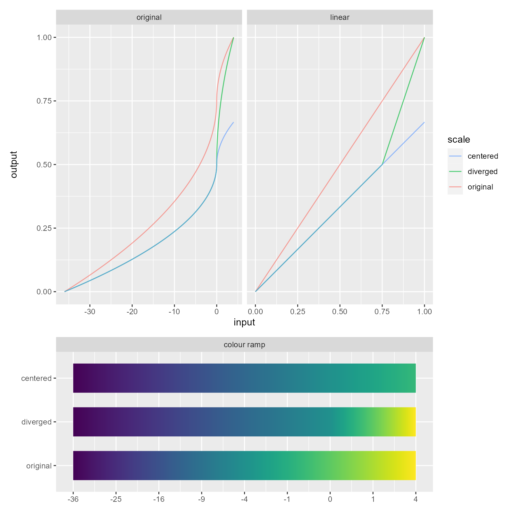

Creates a diverging scale with defined centre / midpoint. Similar to rescale_center(), key difference is
the output palette / range is piecewise linear (with respect to breaks) and the entire output range is
always used.
Centring vs Diverging
The plot below shows how rescale_center() and rescale_diverge() distort the scale output. The input
scale in this case is power_scale(limits = -36:4); this scale is centred and diverged at 0.
The plot on the left shows the mapping between the input -36:4 (x axis) and output 0:1 (y axis). The
plot on the right is a linear representation of the left and is the space that rdeck works in. The input
-36:4 transformed with power_trans() and rescaled to 0:1. This plot has been included because it's
(hopefully) easier to understand.
In the unaltered scale, we see that 0 is mapped to 0.75 in the output, which would be the colour at 0.75
on a colour ramp (e.g. scales::colour_ramp(viridis::viridis(256))(0.75)).
When applying rescale_center() we see that gradient of function has become y = 2/3x in the linear
scale, which is 2/3 * scales::rescale(trans$transform(x)) for our data. For rescale_diverge()
we see a piecewise scale with the break at center; both sides of center have a different gradient
(y = 2/3x and y = 2x - 1) and the full range of y is used.
The colour ramp plot shows the effect rescaling has on a colour palette (in this case viridis).

See also
Other scales:
rescale_center(),
scale_category(),
scale_identity(),
scale_linear(),
scale_log(),
scale_power(),
scale_quantile(),
scale_quantize(),
scale_symlog(),
scale_threshold()
Examples
# create a diverging linear scale at 0
linear_diverged <- rescale_diverge(
scale_color_linear(col, limits = -5:10),
center = 0
)
# create a diverging log scale at 10
log_diverged <- rescale_diverge(
scale_log(col, limits = 1:1000),
center = 10
)